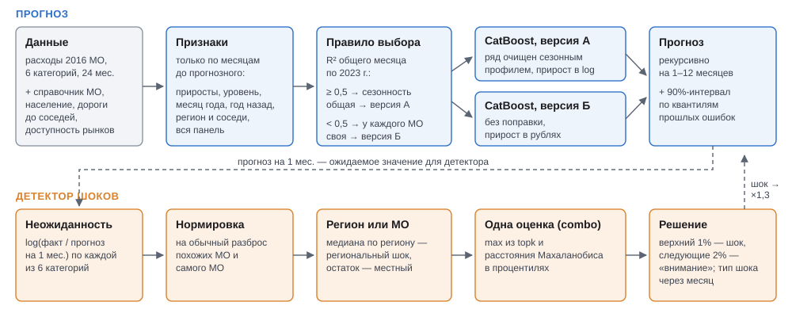

Прогноз безналичных расходов муниципалитетов и поиск шоков
Мы построили прогноз среднемесячных безналичных расходов на жителя для 2016 муниципальных образований по шести категориям на 1, 3, 6 и 12 месяцев и метод поиска шоков. Наша итоговая модель градиентного бустинга (CatBoost), обученная сразу на всех муниципалитетах, на 2024 г. ошибается в среднем на 5,3% на месяц вперед и на 9,9% на год вперед (у Prophet 8,5% и 13,0%) и точнее Prophet во всех 24 сочетаниях категории и горизонта. Метод поиска шоков находит 47% искусственных сдвигов уровня на 10% в тот же месяц при 1% ложных тревог. В 2024 г. он отметил 242 шока у 184 МО.
Ниже можно посмотреть прогноз на 2025 г. по каждому муниципалитету, сравнение моделей и детекторов шоков и подробности метода.
Прогноз на 2025 год по муниципалитетам
Введите название МО или нажмите на точку на карте под графиком. На графике — факт за 2023–2024 гг. и прогноз на январь–декабрь 2025 г. с 90%-интервалом. Точками на факте отмечены месяцы 2024 г., которые детектор счёл шоком (красная) или отметил «вниманием» (жёлтая).
Прогноз по всем МО в виде таблиц — в папке results/forecast_2025 (файл parquet на категорию: прогноз и границы 90%-интервала по месяцам).
Сравнение моделей прогноза
Все модели проверены одним протоколом. Модель обучается на месяцах до точки старта (не меньше всего 2023 г.) и прогнозирует 1, 3, 6 или 12 месяцев вперёд; точки старта сдвигаются на длину горизонта, так что на любом горизонте тестом оказывается весь 2024 г. Справа от значения — разница с Prophet.
«Точнее Prophet» — в скольких сочетаниях категории и горизонта из 24 MAE модели ниже, чем у Prophet.
Версия А — catboost_logdiff_dsp_g123, версия Б — catboost_diff. Как прогнозы итоговой
модели ложились на факт 2024 г. у лучших, типичных и худших МО, видно на
отдельной странице.
Как устроен прогноз

Одна модель CatBoost обучается сразу на всех МО категории и прогнозирует прирост расходов за месяц; прогноз на несколько месяцев строится шаг за шагом. Признаки считаются только по прошлым месяцам: недавние приросты, уровень, тот же месяц год назад, общая динамика всех МО, регион и пять ближайших по дорогам МО, население, индекс доступности рынков.
У модели две версии. В версии А ряды заранее делятся на сезонный профиль, оценённый по всем МО, и модель прогнозирует прирост в логарифмах. Версия Б работает с исходным рядом и приростом в рублях. А точнее на коротком горизонте, Б — на длинном. Версию для категории выбирает правило по данным 2023 г.: если сезонность у МО почти одинакова, берётся А. Так вышло для «Все категории» и Продовольствия, остальным досталась Б.
Интервал прогноза — 5%- и 95%-ные квантили прошлых ошибок, отдельно для категории, горизонта и группы МО по волатильности. Если в последнем месяце у МО был шок, интервал расширяется в 1,3 раза.
Предобученные модели
| модель | как применяли | результат |
|---|---|---|
| Chronos-2 | без дообучения по каждому МО; вариант с национальным рядом СберИндекса с 2018 г. как ковариатой; совместный режим по МО | WAPE 7,9 / 9,6 / 12,1 / 15,9%: на месяц — на уровне «как в прошлом месяце», на год — хуже |
| TabPFN-3 | вместо CatBoost на тех же признаках, обучающие строки — контекст | MAE выше, чем у CatBoost: на 8–10% на месяц, на 40–80% на 6–12 месяцев; в контекст помещается 8–12 тыс. строк из 20–42 тыс. |
| TabFM | так же, как TabPFN-3 | на трёх стартах MAE −17%, +3%, −14% к CatBoost; полный прогон требует GPU и не делался |
Поиск шоков
Шок — месяц, когда расходы МО отклонились от прогноза на месяц вперёд сильнее, чем обычно отклоняются у этого МО.
- Отклонение d = log(факт / прогноз) считается по каждой из шести категорий.
- Оно нормируется на разброс у МО с похожим уровнем расходов в том же месяце и на собственную волатильность МО.
- Медиана по МО региона даёт региональную часть отклонения, остаток — местную.
- Шесть категорий сводятся в одну оценку: максимум процентилей двух статистик — средней силы отклонения по трём самым сильным категориям и робастного расстояния Махаланобиса.
- Шок — верхний 1% МО-месяцев по оценке, «внимание» — следующие 2%.
Разметки шоков нет, поэтому детекторы сравнивались на искусственных данных. В 400 случайных МО-месяцев 2024 г. вставлены устойчивые сдвиги уровня на 5–30% трёх видов: во всех категориях, в одной категории и со сменой структуры трат. Порог каждого детектора подобран на 1% ложных тревог. В таблице — доля найденных сдвигов, %.
Детекторы 4 и 5 сравнивают факт с прогнозом модели и находят больше остальных; разложение на регион и МО добавляет около 10 п.п. на сдвигах 10%. Шок всего региона отделяет только детектор 5: падение региона на 10% он находит во всех случаях. В 2024 г. он отметил 242 шока у 184 МО и 11 региональных шоков (results/shocks_v2/shocks.csv).
Новости
Корпус — русскоязычные издания из CC-News (ruggsea/infini-news-corpus), 3,9 млн статей с декабря 2022 по январь 2025 г.; используются заголовок и лид. Статья относится к месяцу по дате публикации, а к МО — по названию административного центра из справочника СберИндекса; одноимённые и неоднозначные названия исключены. По словарям выделены две темы: ЧС и стихийные бедствия; отключения света, тепла, воды и газа. Признак — всплеск числа статей относительно медианы прошлых месяцев; в модель идут значения за два предыдущих месяца.
Прогноз новости не улучшили: MAE на месяц вперёд выросла на 1,0–1,3%, в месяцы после 135 событий разница в пределах шума. Событие длится дни и в месячных расходах размывается, а новости прогнозируемого месяца на момент прогноза ещё неизвестны. В детекторе новости помогают объяснить тревогу: у шоков всплеск новостей встречается в 2,7 раза чаще, чем в обычные месяцы, но большинство шоков новостями не объясняется.
Проверка прогноза на 2025 год и интервалы
Данных по МО за 2025 г. нет, поэтому сумма прогноза по МО с весами населения сравнивается с национальным рядом СберИндекса. Сопоставимы только два ряда:
| категория | расхождение прогноза со страной, п.п. | расхождение факта МО со страной в 2024 г., п.п. |
|---|---|---|
| Все категории | 2,3 | 2,0 |
| Продовольствие | 3,1 | 3,7 |
Покрытие 90%-интервала на второй половине 2024 г.:
| горизонт | все МО | после шока, без расширения | после шока, с расширением |
|---|---|---|---|
| 1 мес. | 93% | 83% | 92% |
| 3 мес. | 92% | 80% | 88% |
| 6 мес. | 91% | 85% | 89% |
| 12 мес. | 78% | 73% | 83% |
Что проверили и не взяли
- Прямой прогноз на k месяцев одной моделью — на 12 месяцев хуже пошагового во всех категориях.
- Одна модель на все категории — MAE выше на 3–69%.
- Выбор модели для каждой категории и горизонта по прошлым ошибкам — хуже одной модели.
- Ансамбли, другие seed, глубина, регуляризация, функция потерь MAE, веса — в пределах шума.
- Квартальная статистика Росстата по МО (розница, общепит, зарплата, занятость) — в пределах шума.
- Региональные ИПЦ и зарплаты — помогают только «Все категории» на 3–12 месяцев (−4…−15%), остальным вредят.
- Признак Рамадана — помогает общепиту Северного Кавказа в апреле, но эти МО есть только среди неполных рядов.
- Обрезка крайних приростов — MAE выше на 0,3–9%.
- Поправка прогноза после шока — на второй половине 2024 г. не сработала, вместо неё расширяется интервал.
Данные
| источник | что взяли | лицензия |
|---|---|---|
| СберИндекс: данные хакатона | расходы МО, индекс доступности рынков, расстояния между МО | CC BY-SA 4.0 |
| СберИндекс: справочник МО | регион, тип МО, координаты центра, ОКТМО | CC BY-SA 4.0 |
| СберИндекс: национальные расходы | ряд с 2018 г.: ковариата Chronos-2, проверка прогноза на 2025 г. | сайт СберИндекса |
| БДПМО Росстата («Если быть точным») | население; квартальные розница, общепит, зарплата | CC BY 4.0 |
| Росстат: ИПЦ по субъектам | индексы цен по регионам помесячно | открытые данные |
| ЕМИСС, показатель 57824 | зарплата по регионам помесячно | открытые данные |
| CC-News (infini-news-corpus) | заголовки и лиды российских изданий | см. карточку набора |
Как запустить
python3 -m venv .venv && .venv/bin/pip install -r requirements.txt .venv/bin/python -m src.data.external .venv/bin/python -m src.evaluation.run_forecast --models naive prophet_default catboost_diff catboost_logdiff_dsp_g123 .venv/bin/python -m src.evaluation.evaluate .venv/bin/python -m src.forecast.final .venv/bin/python -m src.evaluation.run_forecast --config configs/early.yaml .venv/bin/python -m src.shocks.detector --early results/early .venv/bin/python -m src.forecast.intervals .venv/bin/python -m src.forecast.forecast_2025
Файлы хакатона кладутся в корень репозитория. Остальные сценарии — в
README, гиперпараметры — в
configs/forecast.yaml.